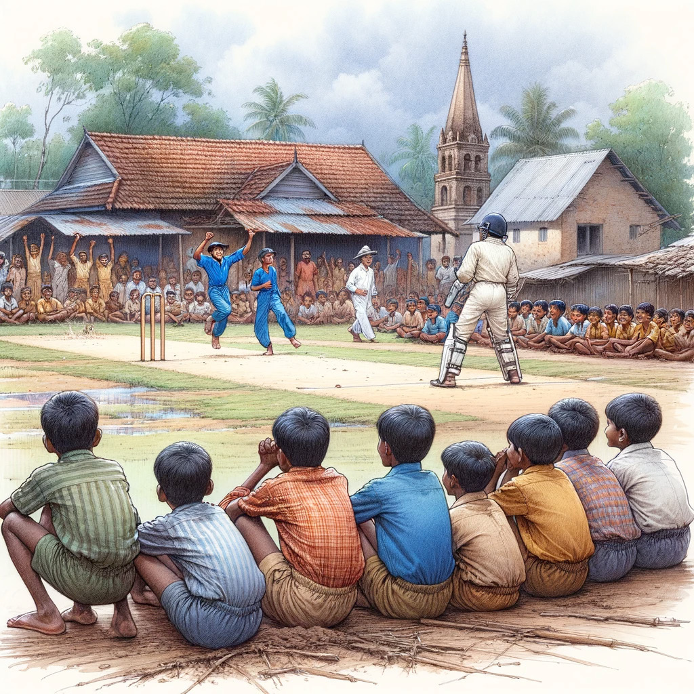
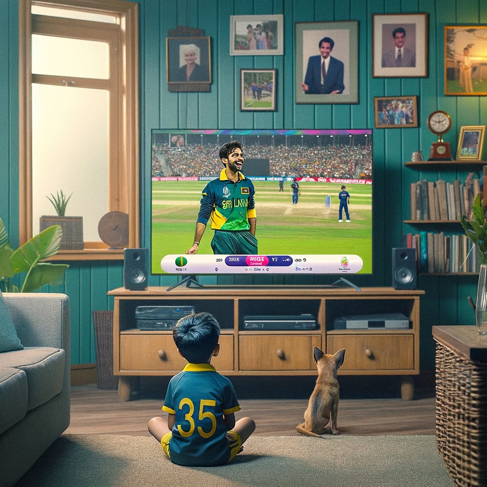
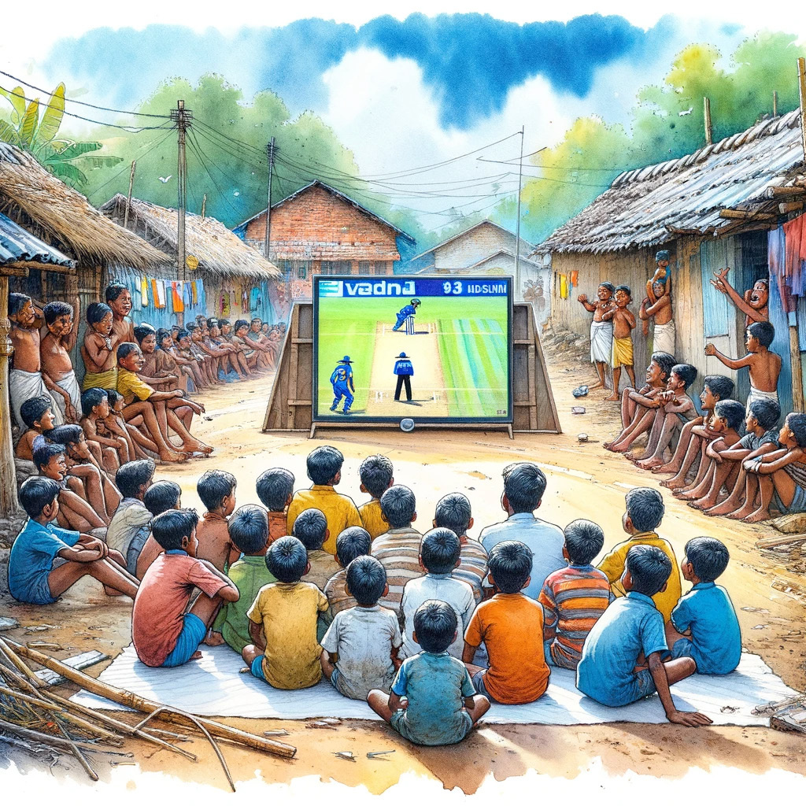
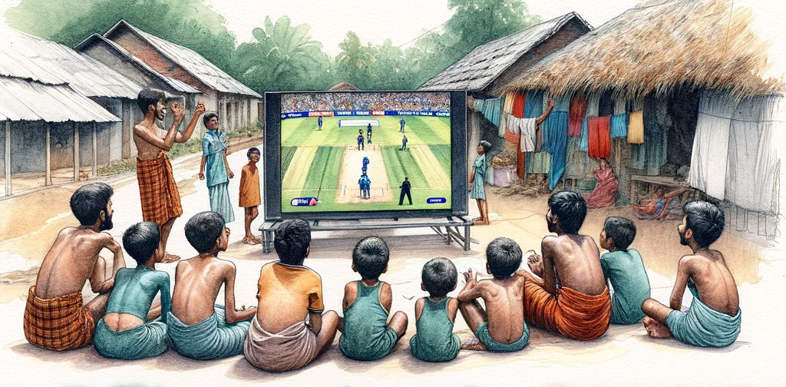

The Enduring Allure of ODIs
The Enduring Allure of ODIs
Jaffna Monitor
hellojaffnamonitor@gmail.com
12
T
he 1996 World Cup was a watershed in the history of ODI Cricket.
It unearthed the commercial potential hidden in the Indian
subcontinent for the game, coinciding with the rise of a cricketing
superstar, Sachin Tendulkar. The on-field exploits of Sri Lanka,
resulting in a rag-to-riches type of rise, constructing an underdog fairy
tale was just the perfect ending. The ODI format was the new trend. It
was here to stay.
Fast forward 27 years later, as the tournament returned to India,
everything had changed. India was an undisputed superpower; cricket
was being played in a manner that was previously unimaginable.
Money was being made in a different format, casting a significant
question mark over the future of ODI cricket. The scarce crowd
attendance at the opening game only strengthened these doubts.
BY:
Dr. Aravinthan Arunthavanathan
SPORTS
The Enduring Allure of ODIs

Jaffna Monitor hellojaffnamonitor@gmail.com 13 Was the ODI format we fell in love with nearing its expiry? As the World Cup 2023 culminated in style, thankfully, the doubts have been dismissed with disdain. Factors such as improved attendance, especially in major cricketing centres, stupendous performances, the rise of Afghanistan, the courage of the Dutch, and the utter dominance of the cricketing superpower, India, have indeed allowed the ICC to breathe easy about the future of the format. The phenomenal rise of India as a team with international dominance has made the format attractive to the beat of cricket's commercial survival. Undoubtedly, many kids want to emulate feats such as Kohli reaching the pinnacle of ODI achievements in front of Sachin or Shami bowling a spell of dreams in a game that counts the most, like in the semis. These are the dreams that ensure the longevity of formats. It's hard to imagine the same being said of T20 leagues. Who would know who has the most number of T20 centuries, and does it count? Does Herath's magical spell in 2014 against the Kiwis carry the same weight as Shami's seven-wicket show? Perhaps not simply because this format and the World Cup has its own aura. Beyond those factors, this tournament has shown us the real value of the format. While Tests and T20Is have their own value offering, ODIs are an eclectic mix of both, with an additional skill set requirement. The Kohli-Rahul partnership in Chennai against Australia serves as an example. Survival of probing spells, followed by consolidation, culminating with sheer dominance. A mix of phases catering to generations of cricket lovers. The Maxwell masterclass in Mumbai was a different dish altogether. The strenuous test on fitness coupled with insane skill requirements to accomplish the impossible was an act that could be seen only in ODIs. Kiwi Darrel Mitchell wasn't far behind. Having fielded 50 overs in the sultry Mumbai weather, the fitness levels he had to show to score a century, which for a while threatened the host, was a feat to cherish, again rare to be required in a T20. While Tests examine the endurance and T20Is test the tempo, this situation tested both in a way other formats could never examine. Also, the beauty of this format lies in the approach a team takes. In T20Is, it's slam-bang mostly. But here, one of the key success factors for India was the Rohit-Kohli synchrony. Rohit went hell for leather at the top, playing selfless knocks, dwarfed in quantum but massive in impact. Kohli dropped anchor, batted deep, and scored truckloads of runs, depicting insane fitness levels in order for the likes of Shreyas and Rahul to go ballistic. The multitude of approaches in order to succeed in itself is a beauty found nowhere else. While the above showcased the various facets of skills tested, the phenomenal rise of Afghanistan and the consistency of the Dutch punching above their weight showed how much potential there is to increase the competitive nature of the ODI cricketing landscape. The re- emergence of the Proteas and Aussies showing their mettle when pushed against the wall were features that reiterated the intrigue that lies within this format, at times even nurturing nostalgia amongst fans.


Jaffna Monitor hellojaffnamonitor@gmail.com 14 Dr. Aravinthan Arunthavanathan is a versatile professional, excelling in both medicine and cricket writing. A graduate of Colombo Medical Faculty, he now plays a vital role in the pharmaceutical industry, focusing on areas such as Medical Marketing and New Business Development. Additionally, he's a celebrated cricket writer in Sri Lanka, known for his analyses on his Twitter, @Cricket_decoded. He is also a skilled public speaker with interests in cognitive sciences and education in medical and management fields. His unique combination of scientific expertise, sports analysis, and communication skills has made him a notable figure in both medical and sports circles. While the initial part of the tournament seemed dull due to the lack of impact or context of individual results, the latter part more than made up for it with close results, upsets, and semi-final berths remaining numerically open till the last Super Saturday. The host nation showcasing their mighty ODI muscle, challenging the rest to take their games to the next level to even come close, was an additional development that is sure to ignite fire in the bellies of other major nations to reclaim lost pride and bragging rights. Australia's resurgence serves as a prime example. After suffering two losses, the Aussies felt overwhelmed, doubting their ability to break through what seemed like a one-sided dominance against them. However, they turned the tables, winning all subsequent matches and ultimately triumphing over India in the final on November 19th. In this context, if the ICC makes the necessary moves and ensures the broken systems of nations with rich cricketing history in Sri Lanka, West Indies, and Zimbabwe are put together while developing the Netherlands and Afghanistan further, the next World Cup, with a refined, concise format, can be a ripper in the rainbow nation. In the interim, a streamlined ODI league with meaning added for each game with a qualification path for the 2027 edition would ensure the lucrativeness of the format and keep the crowd engaged. The T20s may be money-spinning and more attractive, but none of these leagues would make a man with a broken finger come back to lead from the front like Williamson did for the Kiwis or inspire him to achieve feats like Maxwell with cramps all over the body redefining human willpower. That's the aura of an ODI World Cup, and that cannot be replicated by any other format. This edition of the World Cup has proven it remains the pinnacle event of cricket, and despite the T20 leagues, its aura and allure remain unmatched. To keep that alive, ODIs just need context, and if the administrators do that, the format will surely keep thriving. As a fan who fell in love with the game in 95/96, one couldn't have asked for a better celebration of cricket than the one that just concluded. One can hope that, like the 96 edition, this edition too would have made many from younger generations fall in love with this beautiful game.
